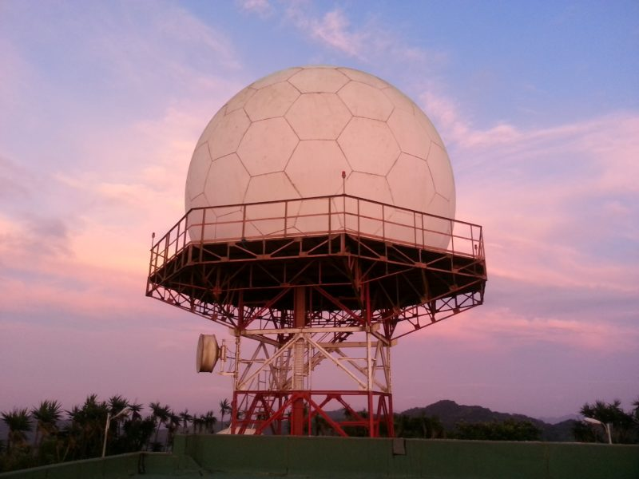
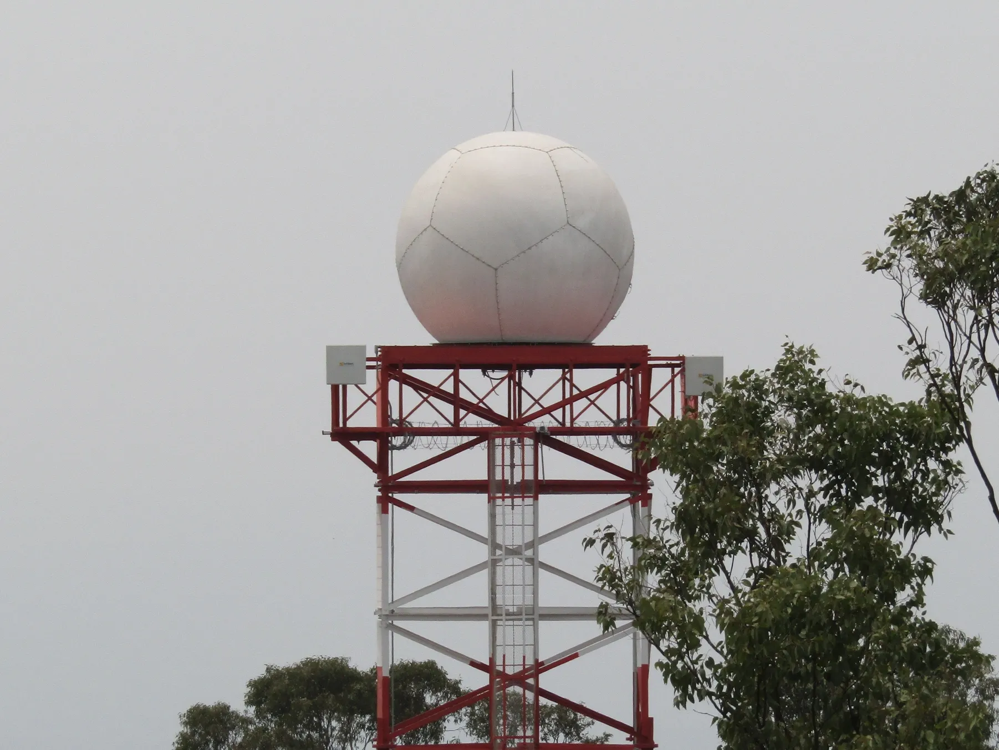

Un radar meteorológico detecta precipitaciones, como lluvia o granizo.
Dentro de la esfera blanca distintiva del radar hay un plato giratorio (o antena) que envía ondas de radio en pulsos cortos.
Cuando estos pulsos golpean las partículas de agua, se reflejan de nuevo en el radar como "ecos", al igual que los ecos de los sonidos que se escuchan en una cueva o túnel.
El tiempo que tarda el pulso en regresar nos dice qué tan lejos está la lluvia, mientras que la fuerza de la señal de retorno revela el tipo de precipitación.